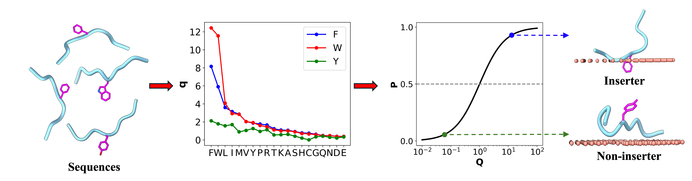

AroMIP scans a given protein sequence for 9-residue fragments centered on an aromatic residue (F, W, Y), and predicts whether the aromatic sidechain in each fragment inserts into the acyl chain region of membranes. The prediction is based on a mathematical model, where each flanking residue contributes a multiplicative factor to the membrane insertion score of the central aromatic residue. The model was trained on the intrinsically disordered regions of the human proteome.